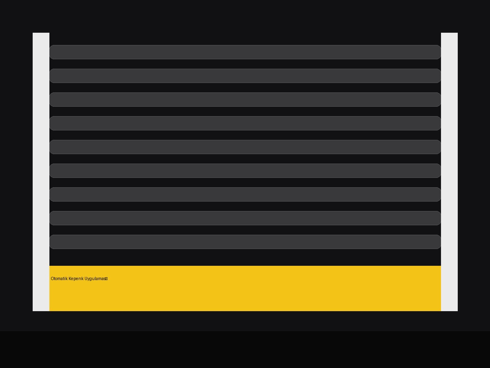

Güçlü Sistem.Temiz Uygulama.
Otomatik kepenk, panjur, çit, prefabrik ev ve hafif çelik yapı çözümlerinde keşiften teslimata profesyonel uygulama.
Sahaya Uygun Çözüm
Her iş için aynı sistemi önermek yerine; kullanım alanını, açıklığı, güvenlik ihtiyacını ve bütçeyi değerlendirip doğru uygulamayı planlıyoruz.
Otomatik Kepenk
Mağaza, işyeri, garaj ve depo için motorlu kepenk sistemleri.
↗02 / PANJURPanjur Sistemleri
Konut ve ticari alanlar için dayanıklı panjur çözümleri.
↗03 / ÇİTÇit Uygulamaları
Bahçe, arsa ve çevre güvenliği için farklı çit sistemleri.
↗04 / YAPIPrefabrik & Çelik
Hızlı uygulanabilir prefabrik ve hafif çelik yapı sistemleri.
↗
Ölçüden Montaja Kontrollü Süreç
Doğru ölçü, doğru malzeme ve düzenli montaj; sistemin uzun ömürlü çalışmasının temelidir. Keşif sonrası ihtiyaca göre çözüm belirlenir, imalat ve montaj planlanır.
Yapılan İşler
Gerçek uygulama fotoğrafları ile yapılan işin türünü birlikte gösteriyoruz. Yeni projeler eklendikçe galeri büyütülebilir.
4 Adımda Teslim
Karmaşık değil; net bir süreç. İhtiyacı anlıyoruz, doğru sistemi belirliyoruz ve uygulamayı kontrollü şekilde tamamlıyoruz.
Keşif
Alan, ölçü ve kullanım ihtiyacı değerlendirilir.
Planlama
Malzeme, sistem ve uygulama biçimi netleştirilir.
İmalat
Projeye uygun üretim ve hazırlık yapılır.
Montaj
Temiz kurulum, test ve teslim tamamlanır.
Projenizi Konuşalım.
Otomatik kepenk, panjur, çit veya yapı sistemi için ölçü ve ihtiyacınızı paylaşın; size uygun çözümü birlikte belirleyelim.